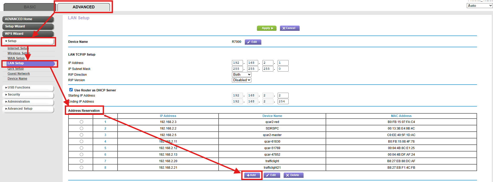
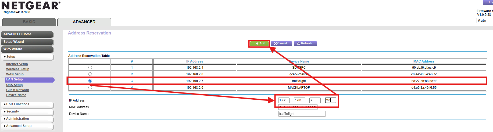
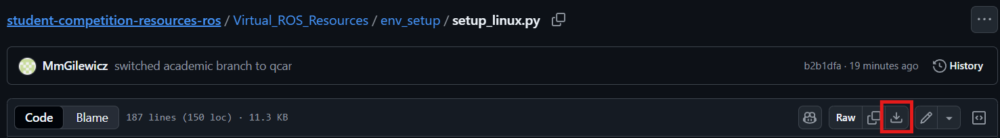

Traffic Light Intersection Setup Guide 🪧
This document covers how to setup a 4-way intersection on the Quanser Large Roadmap and some tips and tricks that may help with traffic lights throughout the competition.
Topics
This document contains the following:
- Existing Documentation
- How to Set the Static IP for a Quanser Traffic Light
- Setting Up a 4-Way Intersection
- Testing an Individual Traffic Light
Existing Documentation
The Quanser Academic Resources Github contains important information about using the Quanser Traffic Lights:
The user manual should be read for information on how to connect to the traffic lights and operate them.
How to Set the Static IP for a Quanser Traffic Light
This guide assumes you are using the Quanser Router or a router that is broadcasting the SSID: Quanser_UVS. If you do not use this SSID, the router will not connect.
Setting a static IP Address for the traffic lights is useful for the competition because you do not need to check the IP Address of the traffic light every time it is booted. This will make swapping the battery much easier since you know what the IP Address will be once the Traffic Lights boot up. Follow the below steps to change the IP Addresses:
-
Ensure only 1 traffic light is powered on (this makes it easier to identify and set the IP Addresses)
-
Ensure the router is on and your computer is connected to the router (ethernet connection is better)
-
Connect to the router via a browser by entering the IP Address: 192.168.2.1
-
Log into the router
- For a Quanser Router the following is relevant:
- Username: admin
-
Password: Quanser_123
-
Go into the
ADVANCEDtab, thenSetup->LAN Setup -
Under
Address ReservationselectAdd
-
Select the traffic light in the
Address Reservation Table, change the IP Address to 192.168.2.20 and clickAdd
-
You should see the traffic light in the
Address Reservationlist -
Click
Applyat the top of the page -
Label the traffic light with the IP Address IMMEDIATELYa
Repeat this process for the other traffic lights using the IP Addresses:
- 192.168.2.21
- 192.168.2.22
- 192.168.2.23
Setting Up a 4-Way Intersection
To set up a 4-way intersection, make sure you have set the static IP Addresses. Then do the following:
-
Download the 4 Way Intersection Python Script manually

-
Ensure the Traffic Lights are on and you can ping each one
-
Use the ping command in a command prompt (e.g.
ping 192.168.2.20) -
Run the Python script
If you ever need to reset the traffic lights, ensure you power cycle the traffic lights before running the Python script again.
Testing an Individual Traffic Light
To test a single traffic light do the following:
- Ensure you have downloaded the Single Traffic Light Tester code
- Ensure the traffic light is on and you can ping it
- Change the IP Address to that of the traffic light in the script
- Run the Python Script